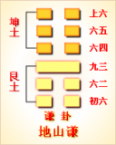

<!DOCTYPE html PUBLIC "-//W3C//DTD XHTML 1.0 Transitional//EN" "http://www.w3.org/TR/xhtml1/DTD/xhtml1-transitional.dtd">

<html xmlns="http://www.w3.org/1999/xhtml">
<head>
<meta content="text/html; charset=utf-8" http-equiv="Content-Type"/>
<title>周易第十五卦：谦�?地山�?坤上艮下原文解释翻译-周易-国学�?/title>
<meta content="周易,谦卦,地山�?坤上艮下" name="keywords"/>
<meta content="周易,谦卦,地山�?坤上艮下，周易第十五卦：谦卦 地山�?坤上艮下解释翻译�?（地山谦）坤上艮�?《谦》：亨。君子有终�?初六，谦谦君子，用涉大川，吉�?六二，鸣谦，贞吉�?九三，劳谦君子，有终，吉�?六四，无不利，□谦�?六五，不富以其邻，利用侵" name="description"/>
<link href="css.css" media="screen" rel="stylesheet" type="text/css"/>
</head>
<body>
<div class="gxlayout">
</div>
<div class="gxlayout">
<div class="ihead">
<div class="title"><a>周易</a></div>
<ul class="more fl">
<li>当前位置:<a>国学梦首�?/a> &gt; <a>国学经典</a> &gt; <a>经部</a> &gt; <a>四书五经</a> &gt; <a>周易</a> &gt;  周易第十五卦：谦�?地山�?坤上艮下原文解释翻译</li>
</ul>
</div>
<div class="gxbl fl">
<div class="latitle">

<h1>周易第十五卦：谦�?地山�?坤上艮下</h1>
<div class="lainfo"><span>作者：佚名</span> <span>全集�?a>周易</a></span> <span>来源：网�?/span> <span>[<a rel="nofollow" target="_blank">挑错/完善</a>]</span></div>
</div>
<div class="lacontent">
<div class="clearfix"></div>
<!--<!-- allowfullscreen="" frameborder="0" height="36" src="http://www.ximalaya.com/swf/sound/yellow.swf?id=1382578&amp;auto=true" width="260"></iframe>-->
<p style="text-align:center"></p>
<p style="text-align:center"><a>周易第十五卦详解</a></p>
<p style="text-align:center"><a>第十五卦初六爻详�?/a>　<a>第十五卦六二爻详�?/a>　<a>第十五卦九三爻详�?/a></p>
<p style="text-align:center"><a>第十五卦六四爻详�?/a>　<a>第十五卦六五爻详�?/a>　<a>第十五卦上六爻详�?/a></p>
<p><strong><a target="_blank">周易</a>第十五卦 �?地山�?坤上艮下</strong></p>
<p>谦：亨，君子有终�?/p>
<p>彖曰：谦，亨�?a target="_blank">天道</a>下济而光明，地道卑而上行。天道亏盈而益谦，地道变盈而流谦，鬼神害盈而福谦，人道恶盈而好谦。谦尊而光，卑而不可踰，君子之终也�?/p>
<p>象曰：地中有山，�?君子以裒多益寡，称物平施�?/p>
<p>初六：谦谦君子，用涉大川，吉�?象曰：谦谦君子，卑以自牧也�?/p>
<p>六二：鸣谦，贞吉。象曰：鸣谦贞吉，中心得也�?/p>
<p>九三：劳谦君子，有终吉。象曰：劳谦君子，万民服也�?/p>
<p>六四：无不利�?扌为)谦。象曰：无不利，(扌为)�?不违则也�?/p>
<p>六五：不富，以其邻，利用侵伐，无不利。象曰：利用侵伐，征不服也�?/p>
<p>上六：鸣谦，利用行师，征邑国。象曰：鸣谦，志未得也。可用行师，征邑国也�?/p>
<p><strong><a href="15_谦卦.html" target="_blank">谦卦</a>卦象，地山谦卦的象征意义</strong></p>
<p><strong>地山谦卦�?a target="_blank">易经</a>六十四卦第十五卦，地山谦卦有哪些具体的的象征意义和指导人生的作用呢？</strong></p>
<p>地山谦卦，是由艮和坤相叠而成，卦体中上卦为坤为地，下卦为艮为山。上卦为坤为顺从之意，还有朴实的意思，下卦为艮为高耸，为笃实之意。也就是忍让不与奸人相争，叫我们处世要谦恭。艮为山，山是大地上的高凸之物。坤为地，和山相比，较为平坦。艮为内卦，坤为外卦，这表示虽然内满如山，积累得很厚实，但是外表却和平地一样，别人看不出来。这说明虽满却不以满自居，喻意着“谦逊”、“谦虚”�?/p>
<p>谦卦位于<a href="14_大有�?html" target="_blank">大有�?/a>之后，《序卦》之中这样解释道：“有大者不可以盈，故受之以谦。”在大有卦之后，要能谦逊。做到谦逊退让，何处不能通达?</p>
<p>《象》曰：地中有山，�?君子以裒多益寡，称物平施�?/p>
<p>这里指出：顺能知止，就是态度谦虚，就能够体现人格魅力了。公务人员若能取丰补欠，均衡权重，政府也就能清正廉洁了�?/p>
<p>周易的六十四卦中唯独谦卦的六爻的爻辞都是吉，其他的卦里，都有吉、有凶。此卦的意思是做人学谦、学敬，那么一切都是吉祥如意的。谦卦属于中中卦，《象》中这样来断此卦：天赐贫人一封金，不争不抢两平分，彼此分得金到手，一切谋望皆遂心�?/p>
<p>地山谦卦卦名为谦。《说文》中对谦的解释是：“谦，敬也。”也就是恭敬、谦虚、谦逊的意思。古人说“谦受益，满招损”，便是来自于《周易》的思想。上一卦是大有卦，人们生活富裕了，富裕之后就会有一种不良风气。是什么风气呢?就是攀比风。比谁钱多，比谁有势力，比谁有能力，这就是攀比。现在人们都富裕了，所以现今也有这种不良风气。学校的孩子们，只要有一个人穿了双进口的鞋，接下来便会有很多人跟着穿。只要有一个学生有了一个高档手机，很快学校里马上就会有很多学生有这种高档手机。现在一个学生的一双鞋往往就在千元左右，可是有什么用�?穿上这双鞋能把体育搞上去还是能把学习成绩槁上�?这是盲目的攀比。可是这却是经济发达的产物。经济社会，人们追求享受，追求富贵，是无可非议的。因为它正是刺激经济发展的一个因素。但盲目攀比，极尽奢侈，却不会有好的结果�?/p>
<p>谦卦之象：月当空，无私也;一人骑鹿，主才禄俱�?三人脚下乱丝，乃牵连未解;贵人捧镜，乃遇清官之�?文字上有公字，主公事得理。地上有山之卦，仰高就下之象�?/p>
<p>地山谦卦从卦象上分析，上卦为坤为地，下卦为艮为山，山在地中便是谦卦的卦象。按现在的话来说便是“不显山，不露水”。山本来是高于大地的，但�?a target="_blank">于谦</a>逊，它甘干埋于地中。我们观察大山就会发现，再高的山，其实它的大部分也是埋于地中的。所以，做人就要像山一样，要比所看到的高许多，可是因为谦逊，把很大一部分埋入地中，隐藏了起来。做人也要这样，不能像墙头草一样“头重脚轻根底浅，嘴尖皮薄腹中空”�?/p>
<p>关键词：周易,谦卦,地山�?坤上艮下</p>
<div class="clearfix"></div>
<div class="title"><div class="thot">解释翻译</div><span>[挑错/完善]</span></div><p><a href="15_谦卦.html" target="_blank">谦卦</a>：亨通。君子谦让将会有好结果�?/p>
<p>初六：谦虚再谦虚是君子应当具备的品德。有利于渡过大江大河，吉利�?/p>
<p>六二：明智的谦让。吉祥的占卜�?/p>
<p>九三：勤劳刻苦的谦让，君子会有好结果。吉利�?/p>
<p>六四：没有什么不利，奋勇向前而又谦让�?由于不警惕使邻人一起遭殃，应当讨伐来犯之敌。没有什么不�?</p>
<p>六五：贫穷是由于敌国的侵掠，应该对之讨伐，无所不利�?/p>
<p>上六：明智而谦�?有利于出兵讨伐邑国�?/p>
<div class="title"><div class="thot">注释出处</div><span>[请记住我�?国学�?www.guoxuemeng.com]</span></div><p>①谦是本卦标题。谦的意思是谦虚、谦让。全卦内容主要讲道理上的�?虚、谦让，并且“谦”字多次出现，所以用它来作标题�?/p>
<p>②有终：拥有 好结果，有所成就�?/p>
<p>③用：有利，利于�?/p>
<p>④鸣：用作“明”，意思是 明智的�?/p>
<p>⑤劳：勤劳，刻苦�?/p>
<p>(6)伪（huT）：用作“挥”，意思是奋勇向前�?/p>
<p>(7)侵伐：这里的意思是讨伐敌人�?/p>
<p>(8)行师；出兵作战�?/p>
<div class="clearfix"></div>
<div class="contextdhall clearfix">
<ul>
<li>上一篇：<a href="14_大有�?html">周易第十四卦：大有卦 火天大有 离上乾下</a> </li>
<li>下一篇：<a href="16_豫卦.html">周易第十六卦：豫�?雷地�?震上坤下</a> </li>
<li>全   文�?a>周易</a></li>
</ul>
</div>
</div>
<div class="clearfix mt20"></div>
</div>
</div>
<div class="clearfix mt20"></div>
<div class="gxlayout">
</div>
<script>
var _hmt = _hmt || [];
(function() {
  var hm = document.createElement("script");
  hm.src = "https://hm.baidu.com/hm.js?872034ded637616c5cf8e173a446bb0e";
  var s = document.getElementsByTagName("script")[0];
  s.parentNode.insertBefore(hm, s);
})();
</script>
</body>
</html>
